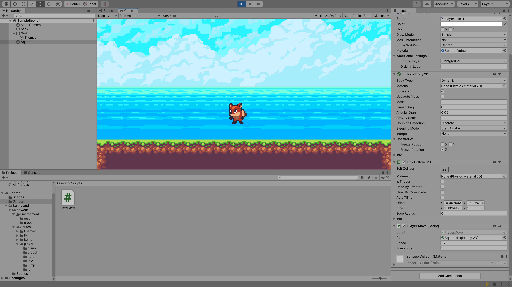
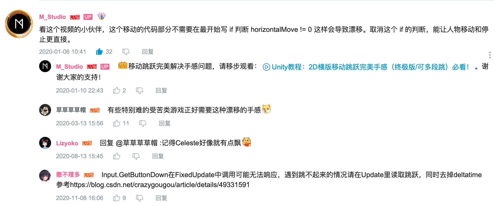

Unity2D角色移动转向与跳跃
using System.Collections;
using System.Collections.Generic;
using UnityEngine;
public class PlayerMove : MonoBehaviour
{
public Rigidbody2D rb;
public float speed;
public float jumpforce;
// Start is called before the first frame update
void Start()
{
}
void FixedUpdate()
{
Movement();
}
// Update is called once per frame
void Update()
{
if (Input.GetButtonDown("Jump")) rb.velocity = new Vector2(rb.velocity.x, jumpforce);
}
void Movement()
{
float flag = Input.GetAxis("Horizontal");
float facedirection = Input.GetAxisRaw("Horizontal");
rb.velocity = new Vector2(flag * speed, rb.velocity.y);
if (facedirection != 0) transform.localScale = new Vector3(facedirection, 1, 1);
}
}

一些记录
GetAxis(axisName)返回由 axisName 标识的虚拟轴的值。对于键盘和游戏杆输入设备，该值将处于 $-1\dots 1$ 的范围内。
GetAxisRaw(axisName)返回由 axisName 标识的虚拟轴的值（未应用平滑过滤）。对于键盘和游戏杆输入，该值将处于 $-1\dots 1$ 的范围内。 由于未对输入进行平滑处理，键盘输入将始终为 $-1$、$0$ 或 $1$。
一开始看见localScale的修改时，我下意识敲了rb.localScale，但实际上是transform.localScale，因为Scale是transform下的一个参数，而transform和script都同属于一个object下，所以不需要别的额外的范围限定。
Update是逐帧执行，FixedUpdate等时间间隔执行。
程序在不同的设备上运行时，受限于设备性能，渲染出的帧数可能不相同，这导致Update单位时间内在不同设备上的执行次数不同，可能造成实际画面效果不一致。所以推荐使用FixedUpdate保证效果一致。
但在编写跳跃动作时，若采用FixedUpdate，可能导致按键不响应，改回Update后解决。问题原因可参考这篇博客Unity3D系列2：Input.GetButtonDown没有正确响应
一些讨论
不明原理
